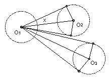
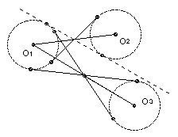

2 circles of radius 1 are drawn in the plane so that no line meets more than two of the circles. Their centers are O1, O2, ... , On. Show that ∑i<j 1/OiOj ≤ (n-1)π/4.
Solution

Denote the circle center Oi by Ci. The tangents from O1 to Ci contain an angle 2x where sin x = 1/O1Oi. So 2x > 2/O1Oi. These double sectors cannot overlap, so ∑ 2/O1Oi < π. Adding the equations derived from O2, O3, ... we get 4 ∑ OiOj < nπ, so ∑ OiOj < nπ/4, which is not quite good enough.

There are two key observations. The first is that it is better to consider the angle OiO1Oj than the angle between the tangents to a single circle. It is not hard to show that this angle must exceed both 2/O1Oi and 2/O1Oj. For consider the two common tangents to C1 and Ci which intersect at the midpoint of O1Oi. The angle between the center line and one of the tangents is at least 2/O1Oi. No part of the circle Cj can cross this line, so its center Oj cannot cross the line parallel to the tangent through O1. In other word, angle OiO1Oj is at least 2/O1Oi. A similar argument establishes it is at least 2/O1Oj.
Now consider the convex hull of the n points Oi. m ≤ n of these points form the convex hull and the angles in the convex m-gon sum to (m-2)π. That is the second key observation. That gains us not one but two amounts π/4. However, we lose one back. Suppose O1 is a vertex of the convex hull and that its angle is θ1. Suppose for convenience that the rays O1O2, O1O3, ... , O1On occur in that order with O2 and On adjacent vertices to O1 in the convex hull. We have that the n-2 angles between adjacent rays sum to θ1. So we have ∑ 2/O1Oi < θ1, where the sum is taken over only n-2 of the i, not all n-1. But we can choose which i to drop, because of our freedom to choose either distance for each angle. So we drop the longest distance O1Oi. [If O1Ok is the longest, then we work outwards from that ray. Angle Ok-1O1Ok > 2/O1Ok-1, and angle OkO1Ok+1 > 2/O1Ok+1 and so on.]
We now sum over all the vertices in the convex hull. For any centers Oi inside the hull we use the ∑j 2/OiOj < π which we established in the first paragraph, where the sum has all n-1 terms. Thus we get ∑i,j 2/OiOj < (n-2)π, where for vertices i for which Oi is a vertex of the convex hull the sum is only over n-2 values of j and excludes 2/OiOmax i where Omax idenotes the furthest center from Oi.
Now for Oi a vertex of the convex hull we have that the sum over all j, ∑ 2/OiOj, is the sum Σ' over all but j = max i plus at most 1/(n-2) Σ'. In other words we must increase the sum by at most a factor (n-1)/(n-2) to include the missing term. For Oi not a vertex of the hull, obviously no increase is needed. Thus the full sum ∑i,j 2/OiOj < (n-1)π. Hence ∑i<j 1/OiOj < (n-1)π/4 as required.

© John Scholes
jscholes@kalva.demon.co.uk
30 Jul 2002
Last corrected/updated 30 Jul 2002